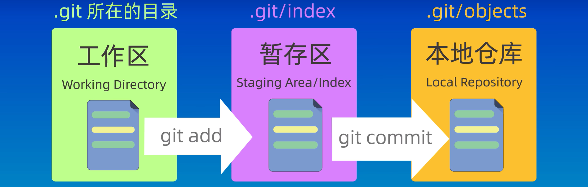
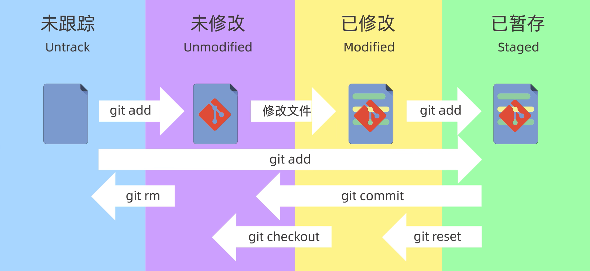

Git¶

Git 不仅仅是个版本控制系统，它也是个内容管理系统(CMS)，工作管理系统等。
Git 与 SVN 区别点：
- Git 是分布式的，SVN 是集中式的：这是 Git 和其它非分布式的版本控制系统，例如 SVN，CVS 等，最核心的区别；
- Git 把内容按元数据方式存储，而 SVN 是按文件：所有的资源控制系统都是把文件的元信息隐藏在一个类似 .svn、.cvs 等的文件夹里；
- Git 分支和 SVN 的分支不同：分支在 SVN 中一点都不特别，其实它就是版本库中的另外一个目录；
- Git 没有一个全局的版本号，而 SVN 有：目前为止这是跟 SVN 相比 Git 缺少的最大的一个特征；
- Git 的内容完整性要优于 SVN：Git 的内容存储使用的是 SHA-1 哈希算法。这能确保代码内容的完整性，确保在遇到磁盘故障和网络问题时降低对版本库的破坏；
0. 初始化¶
配置用户名和邮箱，从而识别出是谁提交的命令
git config --global user.name "your name" # 存储用户名
git config --global user.email "mail@example.com" # 存储密码
git config --global credential.helper store # 存储配置
git config --global --list # 查看配置
1. 新建仓库¶
- 本地仓库
- 远程仓库
创建后会有一个.git目录，这个目录是个隐藏目录 [使用ls -a查看]
2. 工作区域和文件状态¶
a. area¶
-
工作区：电脑中可以实际看到的区域；
-
暂存区：暂存区也叫索引，⽤来临时存放未提交的内容，⼀般在.git⽬录下的index中；
-
本地仓库：Git在本地的版本库，仓库信息存储在.git这个隐藏⽬录中;
-
远程仓库：托管在远程服务器上的仓库 [如GitHub、GitLab和Gitee等]；

修改完工作区的内容之后需要将其git add到暂存区，然后git commit到本地仓库，暂存区可以看做工作区和仓库的运输工具，可以把修改的文件先提交到暂存区中，然后一起提交到仓库。
b. status¶
-
未跟踪：新创建的没有被git管理起来的文件；
-
未修改：已经被管理的但是文件还没有变化修改的文件；
-
已修改：已经修改的但是还没有添加到暂存区的文件；
-
已暂存：修改之后已经加入暂存区的文件；

3. 添加和提交文件¶
查看仓库内文件和文件所处于的状态：
添加到暂存区
把放在暂存区的数据取消暂存
查看暂存区的内容
将暂存区中的文件提交到仓库 [不会提交工作区中的其他文件]
查看提交信息
4. git reset回退版本¶
git reset --soft 版本号 # 回退到某一个版本并且保留工作区和暂存区的所有内容
git reset --hard 版本号 # 回退到某一个版本并且丢弃工作区和暂存区的所有内容
git reset --mixed 版本号 # 回退到某一个版本并且只保留工作区，丢弃暂存区的所有内容
查看操作的历史记录
5. git diff查看差异¶
git diff # 比较工作区和暂存区之间的差异
git diff HEAD # 比较工作区+暂存区和本地仓库之间的差异
git diff --cached # 比较暂存区和本地仓库之间的差异
git diff <commit_hash> <commit_hash> # 比较提交之间的差异
git diff HEAD~ HEAD # 比较提交之间的差异 [~表示上个版本号;~2...]
git diff <branch_name> <branch_name> # 比较分支之间的差异
6. git rm删除文件¶
方法一：先从工作区删除文件，再更新暂存区并提交
rm file1.txt # 在本地工作区中删除文件
git ls-files # 查看暂存区内容 [被删除文件还在暂存区]
git add . # 删除暂存区文件
git add file1.txt # 删除暂存区文件
方法二：使用git rm同时删除工作区和暂存区
两种方式最后都要提交才能从版本库中删除
其他命令：
7. gitignore忽略文件¶
让git忽略一些不需要加入版本库的文件，应该忽略的文件：
- 系统或者软件自动生成的文件；
- 编译产生的中间文件和结果文件；
- 运行时生成日志文件、缓存文件和临时文件；
- 涉及身份、密码口令和密钥等敏感信息的文件；
在.gitignore文件中添加文件名或者相应通配符即可忽略 [如果文件在加入.gitignore文件前被加入版本库中，那么忽略规则对其不会生效]
*.a # 忽略所有的.a文件
!lib.a # 但跟踪所有的lib.a，即使前面忽略了.a文件
/TODO # 只忽略当前目录下的TODO文件
build/ # 忽略任何目录下名为build的文件夹
doc/*.txt # 忽略doc/notes.txt
8. git push和git pull¶
9. 关联本地仓库和远程仓库¶
# 添加远程仓库 [关联远程仓库]
git remote add <远程仓库别名> <远程仓库地址>
git push -u <远程仓库名> <分支名>
# 查看关联的远程仓库
git remote -v
# 拉取远程仓库内容
git pull <远程仓库名> <远程分支名>:<本地分支名> # 相同可省略冒号后面的部分
tips: Git 基本操作

10. 分支管理¶
几乎每一种版本控制系统都以某种形式支持分支，一个分支代表一条独立的开发线。使用分支意味着你可以从开发主线上分离开来，然后在不影响主线的同时继续工作。

Git分支实际上是指向更改快照的指针
创建分支：
查看分支：
切换分支：
当你切换分支的时候，Git 会用该分支的最后提交的快照替换你的工作目录的内容， 所以多个分支不需要多个目录。
合并分支:
删除分支：
合并冲突：
- 若两个分支未修改同一个文件的同一处位置：自动合并；
- 若两个分支修改了同一个文件的同一处位置：产生冲突；
解决方法是手工修改
- Step 1：手工修改冲突文件，合并冲突内容；
- Step 2：添加暂存区 [告诉 Git 文件冲突已经解决]；
git add file - Step 3：提交修改；
git commit -m "message"
中止合并：
当不想继续执行合并操作时可以使用下面的命令来中止合并过程
11. git rebase变基¶

在哪个分支上rebase就把当前分支上从共同祖先到最新提交记录的所有提交都移动到目标分支的最新提交后面。
rebase和merge如何区分使用？
merge：
- 优点：不会破坏原分支的提交历史，方便回溯查看；
- 缺点：会产生额外的提交节点 [merge节点]，分支图比较复杂；
rebase：
- 优点：不会新增额外的提交记录，形成线性历史，比较直观干净；
- 缺点：会改变提交历史，改变了当前分支branch out节点。避免在共享分支时使用。